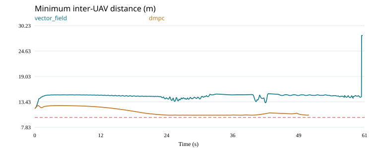
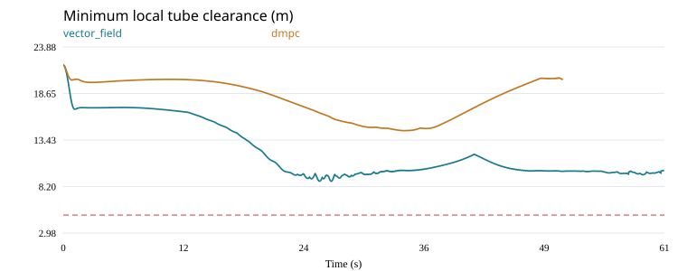
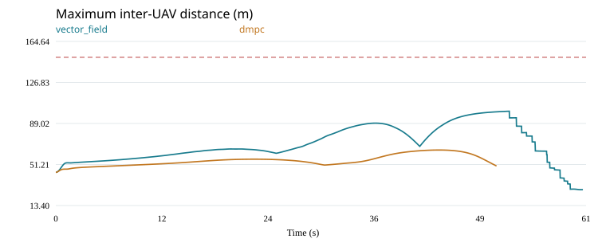
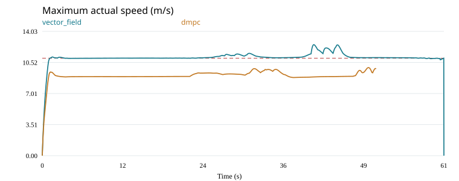
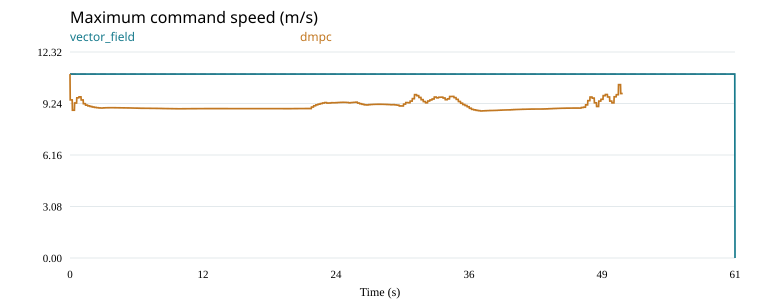
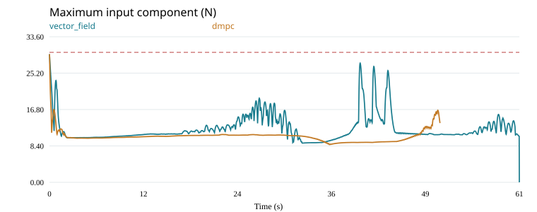

Chỉ thay outer loop. Cùng tube, toàn bộ initial state, inner loop, plant, nhiễu và ngưỡng đánh giá. DMPC cập nhật 0.2 s; vector field cập nhật 0.02 s. Đây là phiên bản DMPC riêng của benchmark, không tái hiện nguyên bản một công trình khác.
| Chỉ số | vector_field | dmpc |
|---|---|---|
| UAV hoàn thành | 27 | 0 |
| Thời gian hoàn thành (s) | 60.62420 | — |
| Khoảng cách cặp nhỏ nhất (m) | 12.00000 | 10.49093 |
| Khoảng hở biên cục bộ nhỏ nhất (m) | 8.79558 | 14.47669 |
| Khoảng cách cặp lớn nhất (m) | 100.33113 | 64.56014 |
| Vận tốc thực lớn nhất (m/s) | 12.52288 | 9.93736 |
| Lệnh vận tốc lớn nhất (m/s) | 11.00000 | 11.00000 |
| Input component lớn nhất (N) | 29.58561 | 29.58561 |
| Thời điểm lỗi (s) | — | 50.42000 |
| Lỗi kết thúc | — | ValueError: DMPC no validated coupled plan after 3 rounds: agent=18, reason=pair |
| Đạt mọi tiêu chí | False | False |






updates: 252
local_solves: 7117
rejected_solves: 67
fallbacks: 12
deadline_misses: 252
total_solver_seconds: 127.79299
max_solver_seconds: 0.24192
terminated_infeasible: True
Local QP logs · Prediction errors · Calibration · Comparison JSON · Shared input checks · Timing details
Run DMPC dừng trước khi hoàn thành: các extrema chỉ thuộc đoạn đã chạy, không chứng nhận an toàn cả nhiệm vụ.
DMPC dùng cruise reference 9 m/s, horizon 3 s và các margins trong cấu hình; baseline có guidance bão hòa 11 m/s. Đây là một điểm vận hành với đánh đổi tốc độ/an toàn, chưa đủ để kết luận ưu thế tổng quát của thuật toán.
Giới hạn dự báo không bảo đảm plant thực an toàn khi predictor chỉ gần đúng. Norm constraints dùng đa diện nội tiếp; tube cuts là xấp xỉ cục bộ và được kiểm tra lại. Failure/infeasibility và deadline misses được giữ nguyên, không clip vận tốc thực.
Benchmark hash: 1e64e823494e4a47c2ea6774c37131d1934df8c924d5fe9f5b53988ce52dd410
Initial state hash: 21df98c604a300c2cdbf390b2d4ae080f6d9c8e2db2eb78a4ccda717421a1351